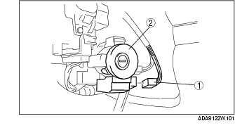

Coil removal/installation
- • Do not remove the coil unless you are replacing it.
- • When only the coil is replaced, the immobilizer system reprogram procedure is not necessary.
1. Disconnect the negative battery cable.
2. Remove the column cover. (See COLUMN COVER REMOVAL/INSTALLATION.)
3. Remove in the order indicated in the table.

|
1
|
Connector
|
|
2
|
Coil
(See Coil Installation Note)
|
4. Install in the reverse order of removal.
Coil Installation Note
1. Install the hole of coil to the tab of steering lock.

2. Install the hook of coil to the steering lock.